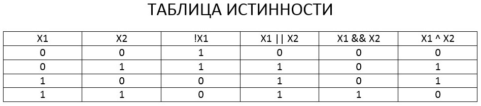
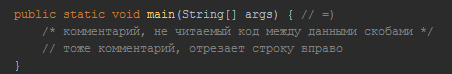
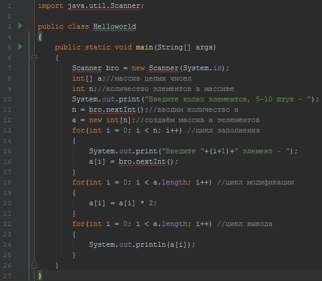
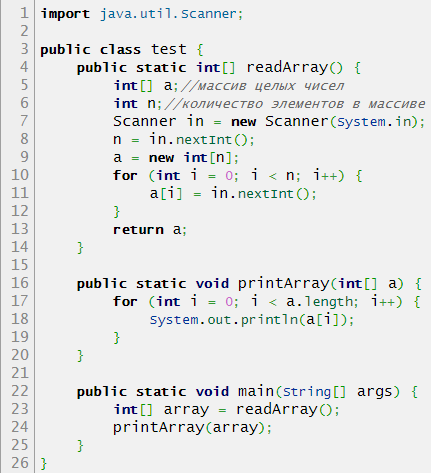
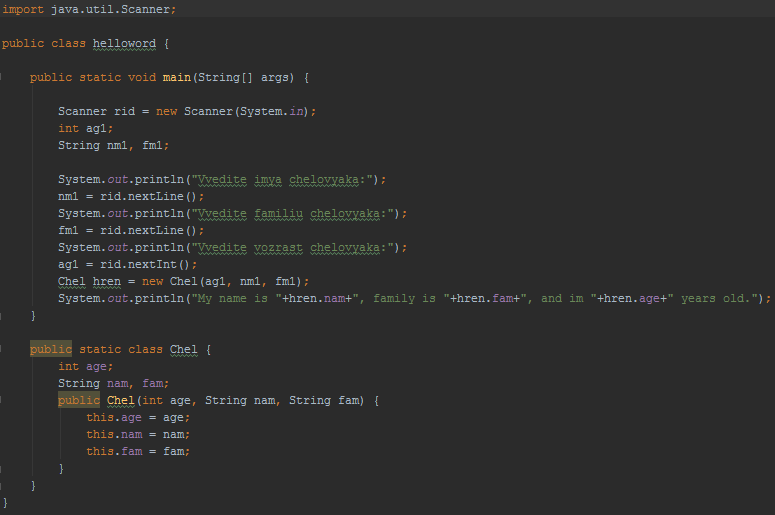
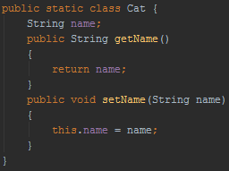
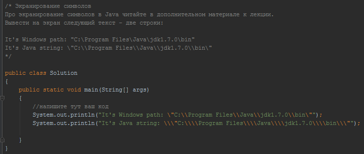
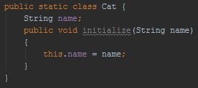

Первый вариант создаётся по учебному материалу, содержащему много недоработок. Поэтому решил попробовать снова.
База конспектов.Первый вариант конспекта.
Оглавление.
- Запуск нового проекта.
- Типы данных, операции.
- Ввод.
- Простые конструкции.
- Массив.
- Функция.
- Класс.
- Пакет.
- Еттеры, иторы, аторы.
- 10
- 11
- 12
- 13
- Вниз
Начало проекта.
Скачать немного джавы. Скачать Intellij IDEA. Настроить это. Создать первый класс в новом проекте. Выполнить его. Много инструкций, и мне уже лень это всё делать. Будем клепать таблицы.
Сайт из источника. Глава по созданию пустого проекта.Наверное, повторять заново мне лень. Самые первые главы разобраны подробно в первом конспекте. Будем считать, что здесь рассказано про структуру простейшей программы, выводящей на консоль небольшой текст.
Глава 2. Типы данных, операции.
| Тип | Описание |
|---|---|
| boolean | Логический тип. Занимает 1 байт. По умолчанию false, также может принимать значение true. |
| byte | Числовой, как и несколько следующих −128..127, по умолчанию 0. |
| short | −32768..32767 |
| int | -2147483648..2147483647 |
| long | −9.2*(10^18)..9.2*(10^18) |
| float | Дробные числа −3.4*(10^38)..3.4*(10^38) 5.55f суффикс? |
| double | Дробные числа −1.8*(10^308)..1.8*(10^308) |
| char '' | 16-битный символ Unicode. Его значение по умолчанию равно ‘\u0000’. |
| String "" | Строка. Указывать с большой буквы. |
| final int | Константа далее тип. Вероятно можно использовать разные. |
| Операция | Описание |
|---|---|
| = | Присваивание. |
| +-*/ | Вряд ли нуждается в комментариях. |
| % | Остаток от деления. |
| += -= *= | (а +=1) == (a = a+1) Сокращённо присваивание с операцией над самой переменной. |
| ++ -- | Вроде как для целых увеличение или уменьшение на 1. (1*++х != 1*х++) |
| == != | Возвращает логический результат сравнивания. |
| < <= > >= | Логический. Возвращает истину, если положение элемента раньше или позже подтверждается. |
| || | ИЛИ (дизъюнкция) |
| && | И (Конъюнкция) |
| ^ | XOR (отрицание или) |
| ! | Отрицание |
| >> << >>> & | ~ | Некоторые побитовые операции, рассмотреть отдельно |

| Действие | Описание |
|---|---|
| сhar a = (char) i; | Записывает в а символ под номером i. |
| int I = a.indexOf(b); | Запишет в I номер первого вхождения символа b в строке а. Нумерация с нуля. |
| lastIndexOf | Работает по тому же принципу, но возвращает номер последнего вхождения символа в строку. |
| char c = a.charAt(i); | Запишет в переменную c символ стоящий на i-м месте в строке a. (i>Na=error) |
| Int I = a.length(); | Получить длину строки. |
| a1 = a2.replace(b1, b2); | в а1 записывает а2, меняя каждый символ б1 на б2. |
| a1 = a1.replace(b1, b2); | Перезаписывает а1. Аналогично предыдущему. |
| a = a.toLowerCase(); | Всё к нижнему регистру. |
| toUpperCase | К верхнему регистру. |
| a = a1.concat(a2); | То же, что и а1+а2 |
| Int I = a1.compareTo(a2); | Запишет в I значение <0, если лексикографически a1 меньше a2, и >0 в обратном случае. Если же a1 лексикографически эквивалентна a2 то в I будет записано 0. |
| String a1 = a.substring(i); | Запишет в строку a1 всю ту часть строки a которая начинается с символа с номером i. |
| String a1 = a.substring(i, j); | Запишет в a1 часть строки a с символа с номером I и до символа с номером j (не включая j). |
| a.equals(b) | Сравнивает содержимое ссылочных переменных, логический. |
StringBuilder s = new StringBuilder("abcd"); это какой-то стандартный класс для работы со строкой с экономией памяти. Вероятно, при перезаписи одной строковой переменной в памяти всё равно создаётся новый объект. Работу класса раскроем позже.
StringBuilder s = new StringBuilder("abcd");
s.append('e');//abcde добавить в конец символ
s.delete(1,2);//acde удаляет подстроку с i - го по j - ый символ
s.insert(1,'b');//abcde вставляет на i - ое место объект j
s.deleteCharAt(2);//abde
String ans = s.toString() //чтобы вернуться от StringBuilder к String;
Глава 3. Ввод.
import java.util.Scanner;
public class test
{
public static void main(String[] args)
{
Scanner vvod = new Scanner(System.in);
int a = vvod.nextInt();//считываем целое число a
int b = vvod.nextInt();//считываем целое число b
System.out.print(a+b);//выводим сумму a+b
}
}
Подключаем что-то из первой строки. Создаём объект vvod типа сканер, можно с иным названием. Присваиваем переменным значения, вызвав объект с подфункцией перевода к целочисленному типу. Выводим их сумму. Конструкция выглядит сложной, и по первому источнику, она не единственная, поэтому интересно бы узнать элементарные фрагменты языка, а потом учить наработанные библиотеки вековых трудов. Но это как-нибудь в процессе. Эту главу наверняка придётся модифицировать. Пока просто скину текст из первого источника.
InputStream inputStream = System.in;
Reader inputStreamReader = new InputStreamReader(inputStream);
BufferedReader bufferedReader = new BufferedReader(inputStreamReader);
String name = bufferedReader.readLine(); //читаем строку с клавиатуры
String sAge = bufferedReader.readLine(); //читаем строку с клавиатуры
int nAge = Integer.parseInt(sAge); //преобразовываем строку в число.
Более компактная запись первой части:
BufferedReader reader = new BufferedReader(new InputStreamReader(System.in));
String name = reader.readLine();
String sAge = reader.readLine();
int nAge = Integer.parseInt(sAge);
Еще более компактная, уже использованная выше:
Scanner scanner = new Scanner(System.in);
String name = scanner.nextLine();
int age = scanner.nextInt();
Глава 4. Простые конструкции.
Условный оператор if.
if ( x > 100)
{
x=x-100;
System.out.println ("Вычтем сотку - "+ x );
}
else
System.out.println ("Меньше сотки. Ну и лан.");
Всё довольно просто. Условие ставится в скобку, внутри считаются логические операции. Одну операцию можно ставить без фигурных скобок. Использование иного случая необязательное, это приблизительно полный пример.
Как это там называлось... Условный оператор вариантов, как-то так? Case.
switch (x)
{
case значение1 : операторы1 ;
case значение2 : операторы2 ;
case значение n : операторы n ;
default: операторыПоУмолчанию ;
}
Здесь тоже нехитро. В случае совпадения х с вариантами выполняется соответствующее дествие. Есть ещё оператор break;, но его предназначение мутное. Ведь выполняться и так должны только те варианты, отвечающие логике. апд Оказывается, есть случаи, когда х равен нескольким кейсам. Тогда брейк завершает выполнение свитча. Или возможны ещё варианты, что кейсы могут выполняться по очереди. Или это способ быстрого выхода для экономии ресурса. Брейк можно ставить после каждого кейса, кроме по умолчанию.
Составной оператор -- даже можно было не упоминать, хотя один нюанс повторить стоит. Если нужно логически фрагмент кода соединить в одну последовательность, напирмер в результате работы условного оператора, то соединяем его фигурными скобками {}. Внутри можно объявить новые переменные, и они будут существовать только внутри фрагмента. Имена со внешними переменными совпадать не должны.
Цикл со счётчиком.
for (int i = 0; i < 5; i++) {};
Блок инициализации. Проверка условия. Если оно истинно, выполняется одиночный или составной оператор. За ним блок приращения. Когда условие станет ложным, код больше не выполнится. В данном примере код выполнится пять раз.
Цикл с предусловием. Так они в паскале назывались, а тут слишком близко.
while (a < b) a *= 2;
Проверяет условие и затем выполняет нужные действия.
Комментарии на скрине будут.
Простой условный оператор. int c = a > b ? 1 : 0; Если выполняется a>b, то с=1, иначе с=0.
Глава 5. Массив.
int[] a; char[] c;
a= new int[10]; c= new chr[10]; //выделение памяти
int x= new int[5]{1,2,3,4,5}; //сразу инициализировать
Ниже пример кода. Сначала ввести количество элементов, создать массив целых чисел количества n. Затем, n раз, от 0 до n-1 элемента заполняем каждый их них значением.
import java.util.Scanner;
public class test {
public static void main(String[] args) {
int[] a;//массив целых чисел
int n;//количество элементов в массиве
Scanner in = new Scanner(System.in);
n = in.nextInt();
a = new int[n];
for(int i = 0; i < n; i++)
{
a[i] = in.nextInt();
}
}
}
Добавим фрагмент для модификации массива, затем вывода его. Добавить бы ещё немного поясняющих операторов вывода, для наглядного примера готовой программы, но это потом.
for(int i = 0; i < a.length; i++)
{
a[i] = a[i] * 2;
}
for(int i = 0; i < a.length; i++)
{
System.out.println(a[i]);
}
Вот и первая картиночка. Код откомпилирован и весь рабочий.
Можно обращаться к элементам массива по индексу. a[3]=5;
Двумерный массив. Чтобы работать с его элементами, надо объявить не только его, но и содержащиеся одномерные массивы. Сказано в источнике.
int[][] a = new int[3][3];
for(int i = 0; i < a.length; i++) { a[i] = new int[3]; } // этот вот самый момент
a[0][0] = 1;
Глава 6. Функция, метод.
public static int pow(int a, int b) {
int result = 1;
for (int i = 0; i < b; i++) {
result *= a;
}
return result;
}
Этот метод принимает два числа. Цикл оборачивает первое умножением само на себя количеством раз, соответствующим второму. То бишь возведение a в степень b. Модификаторы public static подобно основному методу main. Вызывать метод можно отовсюду, вернёт он целое значение из result.
Массивы могут участвовать в качестве аргумента и возвращаемого объекта.
Рексурсию понять сложно, но со временем реально. Стандартный пример с факториалами.
public static int factorial(int n) {
if(n==0)
return 1;
return n*factorial(n-1);
}
Я понял рекурсию как закручивающуюся спираль. Там ведь есть условие, и когда оно сработает в последний раз, спираль развернётся. Если воспринять факториал как выбранное повторяющееся действие между всеми элементами динамического ряда от х1 до х2, то это выглядит уже не так просто. Надо будет скомпилировать такой вариант.
Глава 7. Класс, объект.
Основа программы - основной класс, именем совпадающий с java-файлом, также содержащий основной метод main. Момент этики - camel-style, предполагающий имена классов с большой буквы, а имена полей (переменных класса) и методов класса с маленькой.
Классы представляют собой сложные, составные типы данных, набор переменных. Например, человека можно для конкретной цели описать именем, возрастом и ещё чем-либо. Затем создавать объекты человеческого типа данных.
public class User1 {
int age;//поле
String fName;//поле
String lName;//поле
String say() {//метод
return "I am "+fName+" "+lName;
}
}
Переменная назначается обычным способом. User1 us1; Отличие в том, что примитивные переменные хранят значение, и операции с ними сразу меняют его. Переменные сложного типа хранят только ссылку на класс. Чтобы создать объект этого класса, используется new.
User1 us1 = new User1();
us1.age = 25;
us1.fName = "Vasilii";
us1.lName = "Vasechkin";
В остальном всё примерно так, как уже было обозначено, функционал тот же.
Про ссылочные типы есть непонятные моменты. Литералы -- некие константы, используемые в операциях. Сравнение двух ссылочных переменных, не имеющих общего адреса, хоть и ссылающихся на одинаковые значения, покажет их неравенство. На примере строк, являющихся сложными переменными.
String s1 = "abc", s2 = "abc"; boolean x;
x= s1 == s2 // false, адреса значений переменных разные
x= s1 == "abc" // true, происходит конкатенация (?), и литерал abc сравнивается уже со значением через адрес s1.
Хотя если вдуматься, всё вроде ясно. Другой момент, если переменная со ссылкой не есть сам объект, то где он находится и что с ним делать?
Переменная хранит адрес на объект. Если адреса нет, то объект должен уничтожиться.
Конструкторы класса позволяют создать вариант объекта, сразу вызвав его с заданными значениями. Это методы, сразу принимающие значения и передающие их в поля класса. Имя как у класса. По умолчанию конструктор присутствует, но не работает, не имеет параметров. Для одного класса можно задать несколько конструкторов, а при создании объекта соответствием набору агрументов будет использован один из них. Один пример.
Здесь в коде есть создание класса с конструктором. Ещё один момент -- если присутствует один пользовательский конструктор, то по умолчанию конструктор нужно создавать дополнительно, или запись без параметров будет ошибкой.
Chel hren = new Chel(); //ошибка, конструктор по умолчанию отсутствует.
Все классы в Java считаются унаследованными от класса Object и содержат копию его методов.
Глава 8. Пакеты.
Файлы в компьютере группируются по папкам. Классы в Java (а каждый класс лежит в отдельном файле) группируются по пакетам, которые являются папками на диске. Ничего принципиально нового. «Полным уникальным именем класса» является «имя пакета» + «имя класса». Полное имя класса всегда уникально.
Каждый раз писать длинное имя, например java.util.ArrayList, очень неудобно. Поэтому в Java добавили возможность «импортировать классы». В своем коде ты можешь пользоваться коротким именем других классов, но ты должен в начале своего класса явно указать, какой именно класс будет использоваться. Делается это конструкцией вида import java.util.ArrayList;
В разных пакетах могут лежать классы с одинаковыми именами. Но мы не можем импортировать в наш класс два класса с одинаковыми именами, поэтому к одному из них придётся обращаться по полному имени.
Лучше всегда класть классы в пакеты, а не в корень папки src. Когда классов мало, это ещё не представляет проблему, но когда классов много – очень легко запутаться. Поэтому всегда создавай классы только в пакетах. В Java принято давать классам и пакетам осмысленные имена. Многие компании выпускают свои библиотеки (набор классов) и, чтобы не было путаницы, называют пакеты этих классов по имени компании/сайта.
Глава 9. Этика функционала.
Чем отличается гуманитарий от технаря? Задача первых -- копошиться в грязи собственной деятельности. Хотя это тоже полезно, но... Вторые видят принципы, механику, суть всего. Поэтому подмена понятий может разрушить мир таких людей. Стоит сразу объяснять, что есть закон, а что -- условность времени и места. Но это неуместная философия, а глава посвящена методам, которые имеют свои задачи, хотя их необходимость весьма условна.
Коснтрукторы упомянуты в позапрошлой главе. Их задача -- создать объект класса с введёнными полями данных. Конструкор по умолчанию есть в каждом классе, поэтому вызов класса без аргументов работает так, как работает. Если создать один пользовательский конструктор, то создание объекта с несоответствующим набором параметров приведёт к ошибке компилятора. Поэтому, наверное, стоит делать два конструктора, чтобы один пользовательский дублировал конструктор по умолчанию. Зависит от ситуации и задач класса.
Геттеры и сеттеры. Это методы, возвращающие или модифицирующие значение поля класса. Если можно обратиться к ним напрямую, пока неясно, зачем нужен метод. Например, у класса Chel поле name. Берём объект chl01 класса Chel, и делаем chl01.name=Lola. Потом таким же образом взаимодействуем с Лолой. А тут вдруг потребовался метод класса Chel. Метод GetName возвращает name объекта, пишется вручную. Метод SetName принимает значение, передаёт его в параметр name, и затем делает this.name=name. Думаю, что даже имена методов можно изменить, суть исключительно в том, чтобы они давали то, что дают. осталось понять, в каких случаях без них не обойтись. Ниже текст из источника.
В Java принято скрывать переменные от доступа из других классов. Обычно переменные, объявленные внутри классов, имеют модификатор private. Чтобы другие классы могли менять значения таких переменных, для каждой из них создается пара методов: get и set. Задача метода get вернуть текущее значение переменной тому, кто его вызвал. Задача метода set установить новое значение переменной. Если мы не хотим, чтобы кто-то менял значения переменных наших объектов, мы можем просто не писать метод set для него, или сделать его private. Также в этот метод можно добавить дополнительные проверки данных. И если переданное новое значение неверно, то ничего не менять. Т.к. переменных в классе может быть много, то методы get и set обычно имеют в своем имени имя той переменной, с которой работают. Если переменная называется name, то методы setName и getName. И т.д. по аналогии.
Теперь экранирование. Здесь ближе к полезным технологиям, и эту тему можно будет раскрыть прямо тут. Потом.
Теперь инициализаторы. Есть объекты, существование которых предполагает обязательное наличие данных. Например, есть люди без имени и адреса, но у них есть масса и объём. Это логично. Метод initialize принимает параметры, которые должны определить, существует ли объект, и в каком статусе. Наверное. Если с объектом работать нельзя, его называют невалидным (invalid), если можно – валидным (valid). Основная задача метода initialize – передать в объект все необходимые данные, чтобы сделать его валидным. Имя метода тоже условное, я думаю.

Глава 10.
Глава 11.
Глава 12.
Глава 13.
В начало документа.
Источник обучения.